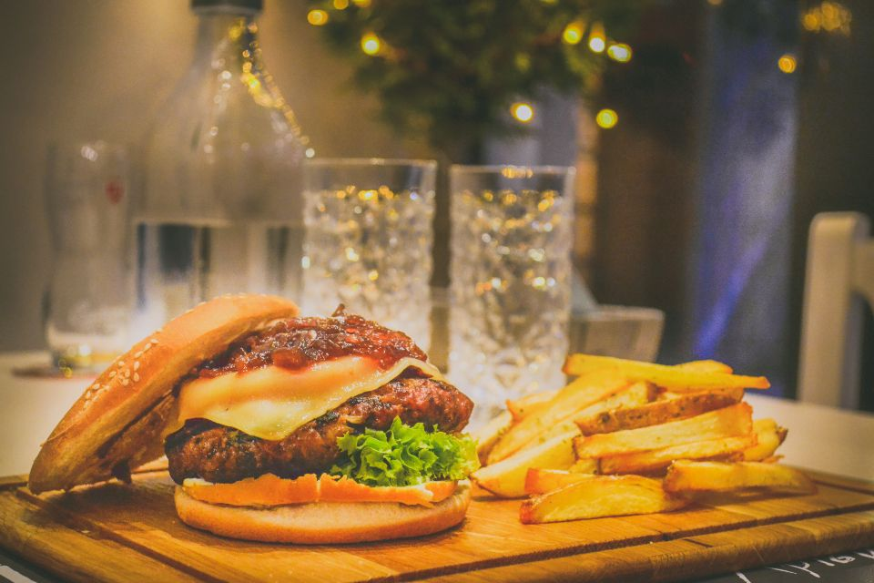

The Anchor & Oak
Find Us
Just up from the quay, a short walk from the town car parks.
Find us
We’d love to see you.
- Address
- 4 Quay Street, Lymington, Hampshire SO41 3AS
- Phone
- 01632 960735
07700 900735 (mobile) - hello@anchorandoak.uklocal.online
Opening hours
| Monday – Thursday | 12pm – 11pm |
| Friday – Saturday | 12pm – midnight |
| Sunday | 12pm – 10:30pm |
| Kitchen | 12pm – 9pm daily |
The Anchor & Oak
See you at the bar.
4 Quay Street, Lymington, Hampshire SO41 3AS